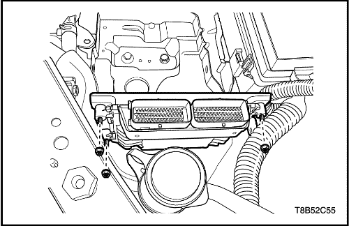

MANTENIMIENTO Y REPARACIÓN
SERVICIO EN VEHÍCULO


Alivio de presión del sistema de combustible
Procedimiento
Precaución: El sistema de combustible está sometido a presión. Para evitar derrames de combustible y el riesgo de lesiones personales o de incendio, es necesario liberar la presión del sistema de combustible antes de desconectar las tuberías de dicho sistema.
- Quite el tapón del depósito de combustible.
- Desmonte de la caja de fusibles del motor el fusible de la bomba de combustible.
- Ponga en marcha el motor y déjelo que se cale.
- Siga arrancando el motor durante otros 10 segundos.
Prueba de presión de combustible
Herramientas necesarias
Manómetro de presión de combustible DW-100-763
Procedimiento
Precaución: El sistema de combustible está sometido a presión. Para evitar derrames de combustible y el riesgo de lesiones personales o de incendio, es necesario liberar la presión del sistema de combustible antes de desconectar las tuberías de dicho sistema.
- Libere la presión del combustible. Consulte el apartado "Descarga de presión del sistema de combustible" de esta sección.
- Instale el manómetro de presión de combustible DW-100-763.
- Mida la presión del combustible.
- Espec. de presión de combustible: 380Kpa (tensión de batería: 13,2V)

Depósito de combustible
Procedimiento de desmontaje
Precaución: El sistema de combustible está sometido a presión. Para evitar derrames de combustible y el riesgo de lesiones personales o de incendio, es necesario liberar la presión del sistema de combustible antes de desconectar las tuberías de dicho sistema.
- Libere la presión del combustible. Consulte el apartado "Bomba de combustible y Aforador de combustible"de esta sección.
- Desconecte el cable negativo de la batería.
- Vacíe el depósito de combustible.
- Quite la abrazadera de retención del cable del freno de estacionamiento y el soporte del depósito de combustible para disponer de espacio para desmontar el depósito.
- Quite la abrazadera del tubo de llenado del depósito de combustible.
- Desconecte el tubo de llenado del depósito de combustible.
- Desconecte del depósito de combustible el tubo de llenado de este depósito.
- Desconecte del tubo de vapor de la válvula de control el tubo de vapor del cartucho.
- Desenchufe el conector del cableado de la bomba de combustible situada en la esquina trasera derecha del depósito de combustible.
- Desconecte la tubería de entrada de combustible situada cerca de la parte delantera derecha del depósito de combustible.
- Quite los clips del cableado y de los conductos de combustible si fuera necesario.
- Apoye adecuadamente el depósito de combustible.
- Quite los tornillos de retención del depósito de combustible.
- Baje cuidadosamente el depósito de combustible.
- Desmonte el depósito de combustible.
- Sustituya cualquier pieza defectuosa si fuera necesario.
procedimiento de montaje
- Ponga el depósito de combustible en posición.
- Coloque los tornillos de fijación del depósito de combustible.
Apretar
Apriete los tornillos de retención del depósito de combustible hasta 20 N•m (15 lb-pie).
- Conecte la tubería de salida de combustible.
- Ponga los clips del cableado y de los conductos de combustible como sea preciso.
- Enchufe el conector eléctrico de la bomba de combustible.
- Conecte la tubería de vapor de combustible.
- Conecte el tubo de llenado y el tubo de ventilación del depósito de combustible.
- Ponga la abrazadera del tubo de llenado en el depósito de combustible.
- Monte las abrazaderas de fijación del cable del freno de estacionamiento y el soporte.
Apretar
Apriete las abrazaderas de fijación del cable del freno de estacionamiento hasta 10 N•m (89 lb-pulg.).
- Conecte el cable negativo de la batería.
- Llene el depósito de combustible.
- Efectúe una comprobación de fugas en el depósito de combustible y las conexiones de las tuberías de combustible.

conjunto de la bomba de combustible
Herramientas necesarias
EN-49090 Instalador/extractor del anillo de bloqueo de la bomba de combustible
Procedimiento de desmontaje
Precaución: El sistema de combustible está sometido a presión. Para evitar derrames de combustible y el riesgo de lesiones personales o de incendio, es necesario liberar la presión del sistema de combustible antes de desconectar las tuberías de dicho sistema.
- Libere la presión del combustible.
- Desconecte el cable negativo de la batería.
- Desmonte el asiento trasero. Consulte la Sección 9H, Asientos.
- Desmonte la tapa de acceso a la bomba de combustible.

- Afloje el bloqueo presionando la espita del conector eléctrico de la bomba de combustible.
- Desenchufe el conector eléctrico del conjunto de la bomba de combustible.
- Desconecte la tubería de salida de combustible.

- Retire el anillo de bloqueo de la bomba de combustible utilizando el extractor/instalador del anillo de bloqueo de la bomba de combustible (EN-49090).
- Desmonte la bomba de combustible.

- Desconecte el aislador.

- Desmonte el conjunto del aforador de combustible.
procedimiento de montaje
Precaución: Procure instalar el aforador de combustible en la carcasa de la bomba de combustible en su posición exacta. De no hacerlo así, la indicación de combustible podría ser incorrecta.
- Instale el conjunto del aforador de combustible.
- Conecte el aislador del aforador de combustible.
- Instale la bomba de combustible en el depósito de combustible.
- Instale el anillo de bloqueo de la bomba de combustible utilizando el extractor/instalador del anillo de bloqueo de la bomba de combustible (EN-49090).
- Enchufe el conector eléctrico del conjunto de la bomba de combustible.
- Apriete el bloqueo presionando la espita del conector eléctrico de la bomba de combustible.
- Conecte la tubería de salida de combustible.

- Ponga la tapa de acceso a la bomba de combustible.
- Conecte el cable negativo de la batería.
- Efectúe una comprobación del funcionamiento de la bomba de combustible.
- Instale el asiento trasero. Consulte la Sección 9H, Asientos.

Filtro de combustible
Procedimiento de desmontaje
Precaución: El sistema de combustible está sometido a presión. Para evitar derrames de combustible y el riesgo de lesiones personales o de incendio, es necesario liberar la presión del sistema de combustible antes de desconectar las tuberías de dicho sistema.
- Libere la presión del combustible.
- Desconecte el cable negativo de la batería.
- Desconecte las tuberías de entrada/salida de combustible desplazando el cierre del conector de la tubería hacia delante y tirando del manguito para extraerlo del tubo del filtro de combustible.
- Quite los tornillos del soporte del filtro de combustible.
- Desmonte el filtro de combustible.
procedimiento de montaje
- Monte el filtro de combustible.
- Coloque los tornillos del soporte del filtro de combustible.
Apretar
Apriete los tornillos del soporte del filtro de combustible hasta 4 N•m (35,4 lb-pulg.).
- Conecte las líneas de conexión rápida de entrada/salida.
- Conecte el cable negativo de la batería.
Canal e inyectores de combustible
Procedimiento de desmontaje
Precaución: El sistema de combustible está sometido a presión. Para evitar derrames de combustible y el riesgo de lesiones personales o de incendio, es necesario liberar la presión del sistema de combustible antes de desconectar las tuberías de dicho sistema.
- Libere el sistema de presión del combustible. Consulte el apartado "Descarga de presión del sistema de combustible" de esta sección.
- Desconecte el cable negativo de la batería.
- Desenchufe los conectores de los inyectores.
- Desconecte la tubería de alimentación de combustible de la rampa de inyectores y coloque un tapón para evitar la entrada de materiales extraños.
- Quite los tornillos de fijación de la rampa de inyectores.
- Desmonte la rampa de inyectores con los inyectores.
- Separe los clips de retención de los inyectores.
- Desmonte los inyectores tirando de ellos hacia abajo y hacia fuera.
- Deseche las juntas tóricas de los inyectores.
procedimiento de montaje
- Coloque las juntas tóricas de los inyectores.
- Coloque los inyectores en la rampa de inyectores.
- Acople los clips de retención de los inyectores.
- Instale la rampa de inyectores con los inyectores en el colector de admisión.
- Coloque los tornillos de fijación de la rampa de inyectores.
- Desmonte la rampa de inyectores con los inyectores.
Apretar
Apriete el tornillo de fijación de la rampa de inyectores 8 N•m (70,8 lb-pulg.).
- Conecte la tubería de alimentación de combustible de la rampa de inyectores y coloque un tapón para evitar la entrada de materiales extraños.
- Enchufe los conectores de los inyectores de combustible.
- Conecte el cable negativo de la batería.
bobina de encendido
Herramientas necesarias
Extractor/Instalador KM-6009
Procedimiento de desmontaje
- Desconecte el cable negativo de la batería.
- Suelte la tapa de la bobina de encendido.
- Desenchufe el conector de la bobina de encendido.
- Quite los tornillos de la bobina de encendido.
Apretar
Apriete el tornillo de la bobina de encendido hasta 8 N•m (70,8 lb-pulg.).
- Coloque el extractor/instalador KM-6009.
- Desmonte la bobina de encendido.
Sensor 1 de temperatura del refrigerante del motor (ECT)
Procedimiento de desmontaje
- Desconecte el cable negativo de la batería.
- Vacíe el refrigerante del motor. Consulte la Sección 1D, Sistema de refrigeración del motor.
- Desenchufe el conector del ETC.
- Suelte el clip de fijación del ECT.
- Separe el ECT del distribuidor de refrigerante.
procedimiento de montaje
- Acople el ECT al distribuidor de refrigerante.
- Acople el clip de fijación del ECT.
- Enchufe el conector del ETC.
- Vuelva a llenar el refrigerante del motor. Consulte la Sección 1D, Sistema de refrigeración del motor.
Sensor 2 de temperatura del refrigerante del motor (ECT)
Procedimiento de desmontaje y montaje
- Desconecte el cable negativo de la batería.
- Vacíe el refrigerante del motor. Consulte la Sección 1D, Sistema de refrigeración del motor.
- Desenchufe el conector del sensor ECT 2.
- Desmonte el sensor ECT 2 del radiador.
Apretar
Apriete el sensor de ECT 2 hasta 20 N•m (15 lb-pie).

Controlador de acelerador electrónico (ETC)
Procedimiento de desmontaje
- Desenchufe el conector negativo de la batería.
- Vacíe el refrigerante del motor. Consulte la Sección 1D, Sistema de refrigeración del motor.
- Desmonte el conjunto de filtro del aire. Consulte la Sección 1C2, Mecánica del motor - 1.4L (G14D).
- Desenchufe el conector del ECT.
- Desconecte el manguito de entrada de refrigerante (1).
- Desconecte el manguito de salida de refrigerante (2).
- Desconecte el manguito EVAP (3).
- Desconecte el manguito de PCV (4).
- Quite los tornillos de apriete del ETC.
- Desmonte el ETC con la arandela de junta.
procedimiento de montaje
- Coloque el ETC con la arandela de junta.
- Coloque los tornillos de apriete del ETC.
Apretar
Apriete los tornillos de retención del ETC 8 N•m (70,8 lb-pulg.).
- Conecte el manguito de entrada de refrigerante (1).
- Conecte el manguito de salida de refrigerante (2).
- Conecte el manguito de EVAP (3).
- Conecte el manguito de PCV (4).
- Enchufe el conector del ETC.
Sonda lambda calentada delantera (HO2S1)
Herramientas necesarias
Herramienta para el montaje/desmontaje del sensor de oxígeno EN-48259
Procedimiento de desmontaje
Aviso: El sensor de oxígeno utiliza un cable espiral y un conector que están permanentemente unidos al mismo. Dicho cable espiral no debe separarse del sensor de oxígeno. Si el cable espiral se quitara o resultara dañado, el funcionamiento adecuado del sensor de oxígeno se podría ver afectado. Maneje con cuidado el sensor de oxígeno. No lo deje caer al suelo.
Precaución: Espere a que se enfríe el motor antes de desmontar el sensor de oxígeno. Si no lo hace, podrían dañarse las roscas del colector de escape.
- Desconecte el cable negativo de la batería.
- Desenchufe el conector de la HO2S1.
- Monte la herramienta EN-48259.
- Desmonte la HO2S1.
procedimiento de montaje
Importante: Se utiliza un producto antigripaje en las roscas del sensor de oxígeno. Dicho producto está compuesto de grafito líquido y cuentas de vidrio. El grafito se consumirá, pero no las cuentas de vidrio, lo cual facilita que se desmonte el sensor. Los sensores nuevos o de reciclado ya vendrán con el compuesto aplicado a las roscas. Si se desmonta el sensor de algún motor y, por alguna razón, tiene que volverse montar, se debe aplicar el producto antigripaje a las roscas antes de reinstalar dicho sensor.
- Recubra las roscas de la HO2S1 con el producto antigripaje si fuera necesario.
- Monte la HO2S1 en el colector de escape.
Apretar
Apriete el HO2S1 hasta 40 N•m (29,5 lb-pie).
Sonda lambda calentada trasera (HO2S2)
Herramientas necesarias
Herramienta para el montaje/desmontaje del sensor de oxígeno EN-48259
Procedimiento de desmontaje
Aviso: El sensor de oxígeno utiliza un cable espiral y un conector que están permanentemente unidos al mismo. Dicho cable espiral no debe separarse del sensor de oxígeno. Si el cable espiral se quitara o resultara dañado, el funcionamiento adecuado del sensor de oxígeno se podría ver afectado. Maneje con cuidado el sensor de oxígeno. No lo deje caer al suelo.
Precaución: Espere a que se enfríe el motor antes de desmontar el sensor de oxígeno. Si no lo hace, podrían dañarse las roscas del colector de escape.
- Desconecte el cable negativo de la batería.
- Desenchufe el conector de la HO2S2.
- Monte la herramienta EN-48259.
- Desmonte la HO2S2.
procedimiento de montaje
Importante: Se utiliza un producto antigripaje en las roscas del sensor de oxígeno. Dicho producto está compuesto de grafito líquido y cuentas de vidrio. El grafito se consumirá, pero no las cuentas de vidrio, lo cual facilita que se desmonte el sensor. Los sensores nuevos o de reciclado ya vendrán con el compuesto aplicado a las roscas. Si se desmonta el sensor de algún motor y, por alguna razón, tiene que volverse montar, se debe aplicar el producto antigripaje a las roscas antes de reinstalar dicho sensor.
- Recubra las roscas de la HO2S2 con el producto antigripaje si fuera necesario.
- Monte la HO2S2 en el colector de escape.
Apretar
Apriete la HO2S2 hasta 40 N•m (29,5 lb-pie).
Sensor de presión de aire colector (MAP)
Procedimiento de desmontaje y montaje
- Desconecte el cable negativo de la batería.
- Desenchufe el conector del MAP.
- Desenchufe el conector del sensor MAP.
Apretar
Apriete el tornillo del sensor MAP hasta 8 N•m (70.8 lb-pulg.).
Sensor de temperatura del aire de admisión (IAT)
Procedimiento de desmontaje y montaje
- Desconecte el cable negativo de la batería.
- Desenchufe el conector del IAT.
- Desmonte el IAT.
Válvula de solenoide de actuador de posición de árbol de levas
Procedimiento de desmontaje
- Desconecte el cable negativo de la batería.
- Desenchufe los conectores de la válvula de posición del árbol de levas.
- Quite el tornillo de la válvula de posición del árbol de levas.
- Retire la válvula de posición del árbol de levas con su junta.
procedimiento de montaje
- Recubra la junta con aceite del motor limpio.
- Monte la válvula de posición del árbol de levas.
- Coloque el tornillo de la válvula de posición del árbol de levas.
Apretar
Apriete el tornillo de la válvula de posición del árbol de levas hasta 6 N•m (53,1 lb-pulg.).
- Enchufe el conector de la válvula de posición del árbol de levas.
- Conecte el cable negativo de la batería.

Módulo del pedal acelerador (APM)
Procedimiento de desmontaje y montaje
- Desconecte el cable negativo de la batería.
- Desconecte el conector del módulo del pedal acelerador (APM) del APM.
- Extraiga las tres tuercas que unen el APM a su soporte.
Apretar
Apriete las tuercas de fijación del módulo del pedal acelerador hasta 12 N•m (8,8 lb-ft).
Sensor de golpes
Procedimiento de desmontaje y montaje
- Desconecte el cable negativo de la batería.
- Quite el tornillo de fijación del sensor de picado de las bielas.
- Desmonte el sensor de picado de las bielas.
Apretar
Apriete el tornillo de fijación del sensor de picado de las bielas hasta 20 N•m (14,7 lb-pie).

Ventilación del cartucho de emisión de vapores (EVAP)
Procedimiento de desmontaje
- Desconecte el cable negativo de la batería.
- Desenchufe el conector de la válvula de solenoide de ventilación del cartucho de las emisiones de vapor.
- Desconecte la manguera de ventilación del cartucho de emisiones de vapor.
- Retire el conjunto de ventilación del cartucho de emisiones de vapor presionándolo hacia la izquierda.
procedimiento de montaje
- Coloque el conjunto de ventilación del cartucho de emisiones de vapor presionándolo hacia la derecha.
- Conecte la manguera de ventilación del cartucho de emisiones de vapor.
- Enchufe el conector de la válvula de solenoide de ventilación del cartucho de las emisiones de vapor.
- Conecte el cable negativo de la batería.

Cartucho de emisiones de vapor (EVAP)
Procedimiento de desmontaje
- Desmonte el sistema de ventilación del cartucho de emisiones de vapor. Consulte el apartado "Ventilación del cartucho de emisiones de vapor (EVAP)" de esta sección.
- Desconecte las mangueras de entrada y salida del cartucho de emisiones de vapor.
- Quite el tornillo de fijación del soporte del cartucho de emisiones de vapor.
- Desmonte el cartucho de emisiones de vapor.
procedimiento de montaje
- Monte el cartucho de emisiones de vapor.
- Coloque el tornillo de fijación del soporte del cartucho de emisiones de vapor.
Apretar
Apriete el tornillo de fijación del soporte del cartucho de emisiones de vapor hasta 8 N•m (71 lb-pulg.).
- Conecte las mangueras de entrada y salida en el cartucho de emisiones de vapor.
- Instale el sistema de ventilación del cartucho de emisiones de vapor. Consulte el apartado "Ventilación del cartucho de emisiones de vapor (EVAP)" de esta sección.
Válvula de purga del cartucho EVAP
Procedimiento de desmontaje y montaje
Precaución: El sistema de combustible está sometido a presión. Para evitar derrames de combustible y el riesgo de lesiones personales o de incendio, es necesario liberar la presión del sistema de combustible antes de desconectar las tuberías de dicho sistema.
- Desconecte el cable negativo de la batería.
- Desconecte las mangueras superior e inferior de la válvula de purga del cartucho de emisiones de vapor.
- Desenchufe el conector de la válvula de purga del cartucho de emisiones de vapor (EVAP).
- Desacople la válvula de purga del cartucho del EVAP.
Sensor de posición del árbol de levas (CMP)
Procedimiento de desmontaje y montaje
- Desconecte el cable negativo de la batería.
- Desenchufe los conectores del sensor CMP.
- Quite los tornillos de fijación del sensor CMP.
- Desmonte el CMP.
Sensor de posición del cigüeñal (CKP)
Procedimiento de desmontaje y montaje
- Desconecte el cable negativo de la batería.
- Desmonte el motor de arranque. Consulte la Sección 1E, Sistema eléctrico del motor.
- Quite el tornillo de fijación del sensor de CKP.
- Desmonte el sensor de CKP.
Apretar
Apriete el tornillo del sensor de CKP hasta 4,5 N•m (39,8 lb-pulg.).
ECM
Procedimiento de desmontaje y montaje
- Desconecte el cable negativo de la batería.
- Desbloquee la palanca de bloqueo del conector del ECM.

- Quite las tuercas de fijación del ECM.
Apretar
Apriete las tuercas de fijación del ECM hasta 8 N•m (70,8 lb-pulg.).
- Desmonte el ECM.
| © Copyright Chevrolet Europe. Reservados todos los derechos |